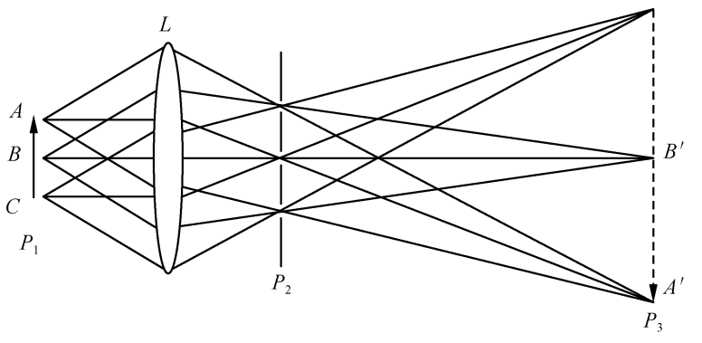
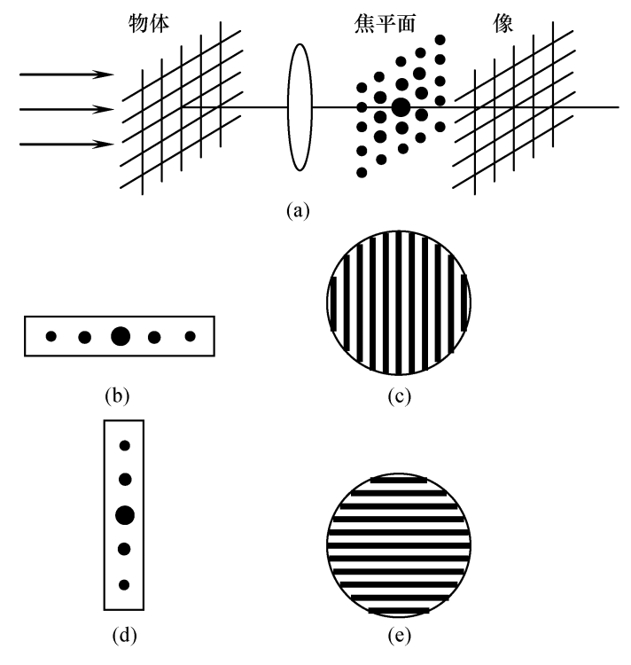
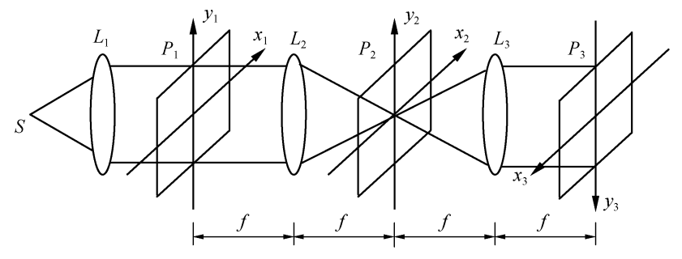

空间滤波的目的是通过有意识地改变像的频谱，使像产生所希望的变换.
光学信息处理是一个更为宽广的领域，其主要是用光学方法实现对输入信息的各种变换或处理.
阿贝研究显微镜成像问题时，提出了一种不同于几何光学的新观点：他将物看成不同空间频率信息的集合，相干成像过程分两步完成，如图所示.

第一步是入射光场经物平面\(P_1\)发生Fraunhofer衍射，在透镜后焦面\(P_2\)上形成一系列衍射斑；
第二步是各衍射斑作为新的次波源发出球面次波，在像面上互相叠加，形成物体的像.
光波不是经过任何物都会发生衍射，需要依照物的结构来定.
入射光场经物平面发生夫琅禾费衍射，是阿贝成像理论的应用前提，而非结论.
将显微镜成像过程看成是上述两步成像的过程，是波动光学的观点，后来人们称其为阿贝成像理论.
阿贝成像理论不仅用Fourier变换阐述了显微镜成像的机理，更重要的是首次引入频谱的概念，启发人们用改造频谱的手段来改造信息.
阿贝-波特实验是对阿贝成像原理最好的验证与演示.
这项实验的一般做法如图所示，用平行相干光束照明一张细丝网格，在成像透镜的后焦面上出现周期性网格的Fourier频谱，由于这些Fourier频谱分量的再组合，从而在像平面上再现网格的像.

若将各种遮挡物（如光圈、狭缝、小光屏）放在频谱面上，就能以不同方式改变像的频谱，从而在像平面上得到由改变后的频谱分量重新组合得到的对应的像.
图(a)是实验装置图；图(b)是使用一条水平狭缝时透过的频谱，对应的像如图(c)所示，它只包括网格的垂直结构；若将狭缝旋转90°，则透过的频谱和对应的像如图(d)、图(c)所示.
若在焦面上放一个可变光圈，开始时光圈缩小，使得只通过轴上的Fourier分量；然后逐渐增大光圈，就可以看到网格的像怎样由Fourier分量一步步综合出来.
这些实验以其简单的装置十分明确地演示了阿贝成像原理，对空间滤波的作用给出了直观的说明，为光学信息处理的奠定了基础.
这里可以附一个视频链接.
以一维光栅为例，用Fourier分析的手段讨论空间滤波的过程，以便更透彻地了解改变系统透射频谱对像结构的影响.
简单起见，采用最典型的相干滤波系统，通常称为\(4f\)系统，如图所示：

[设]光栅常数为\(d\)，缝宽为\(a\)，光栅沿\(x_1\)方向的宽度为\(L\)，则其透过率为：
中心狭缝透过率可用矩形函数表示为：
$$t_0(x) = \text{rect}\left(\frac{x}{a}\right)$$其他狭缝透过率可由中心狭缝透过率平移距离\(d\)表示，可改写为与Dirac函数相卷积的形式：
$$t_n(x) = t_0(x - nd) = t_0(x)*\delta(x - nd),\quad n=0,\pm1,\pm2,\cdots$$ $$\therefore t'(x) = \sum_{n=-\infty}^{+\infty} t_n(x) = t_0(x)*\sum_{n=-\infty}^{+\infty}\delta(x-nd)$$引入梳状函数，有：
$$\begin{align}\sum_{n = -\infty}^{+\infty}\delta(x - nd) &= \frac{1}{d}\sum_{n=-\infty}^{+\infty}\delta\left(\frac{x}{d} - n\right)\\&= \frac{1}{d}\text{comb}\left(\frac{x}{d}\right)\end{align}$$ $$\therefore t'(x) = t_0(x)*\frac{1}{d}\text{comb}\left(\frac{x}{d}\right)$$由于光栅在\(x\)方向上有宽度\(L\)的限制，故：
$$\begin{align} t(x) &= t'(x)\text{rect}\left(\frac{x}{L}\right)\\ &= \left[\text{rect}\left(\frac{x_1}{a}\right)*\frac{1}{d}\text{comb}\left(\frac{x_1}{d}\right)\right]\text{rect}\left(\frac{x_1}{L}\right) \end{align}$$\(P_2\)平面上的光场分布应正比于：
$$T(\xi) = \frac{aL}{d}\sum_{m=-\infty}^{+\infty}\text{sinc}\left(\frac{am}{d}\right)\text{sinc}\left[L\left(\xi - \frac{m}{d}\right)\right]$$为避免各级频谱重叠，设\(L\gg d\).
下面讨论在频谱面上放置不同的滤波器时，在输出面上像场的变化情况.
case1：滤波器为一适当宽度的狭缝，仅允许零级谱通过，即仅允许\(\frac{aL}{d}\text{sinc}(L\xi)\)通过，则狭缝后的透射光场为：
$$T(\xi)H(\xi) = \frac{aL}{d}\text{sinc}(L\xi)$$于是输出平面上的场分布为：
$$g(x_3) = \mathcal{F}^{-1}\{T(\xi)H(\xi)\} = \frac{a}{d}\text{rect}\left(\frac{x_3}{L}\right)$$